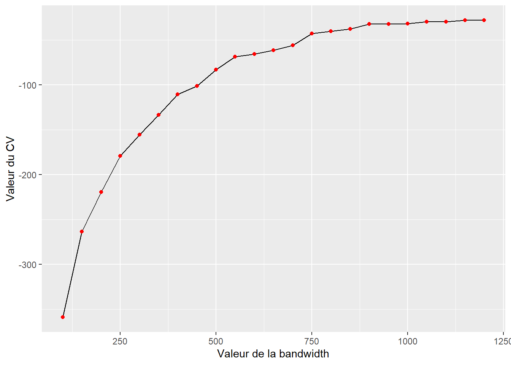
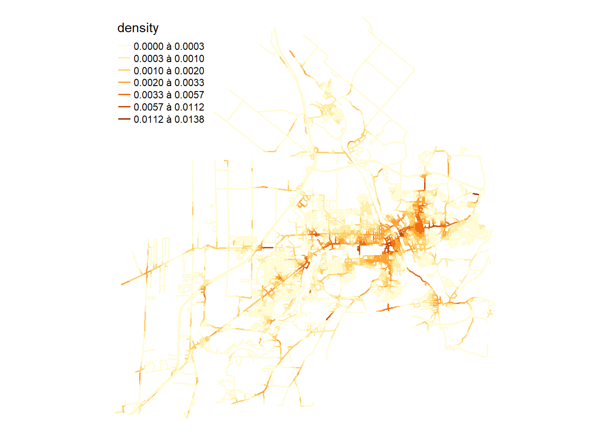
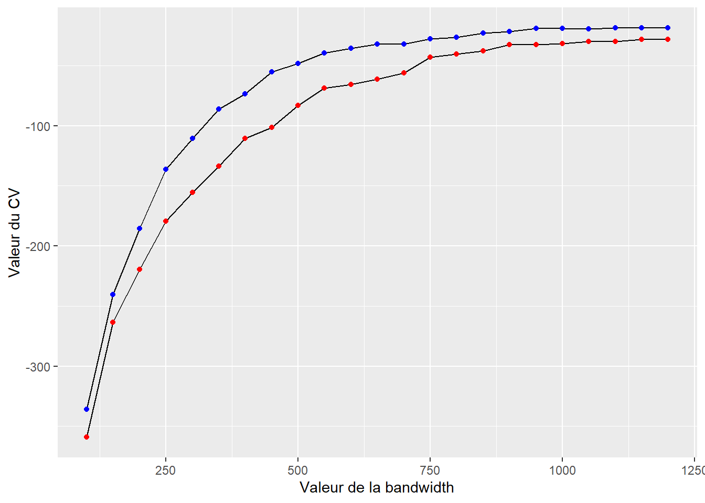
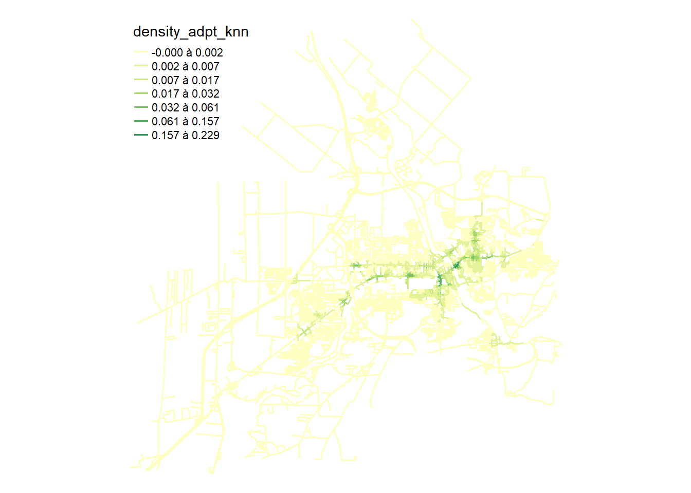
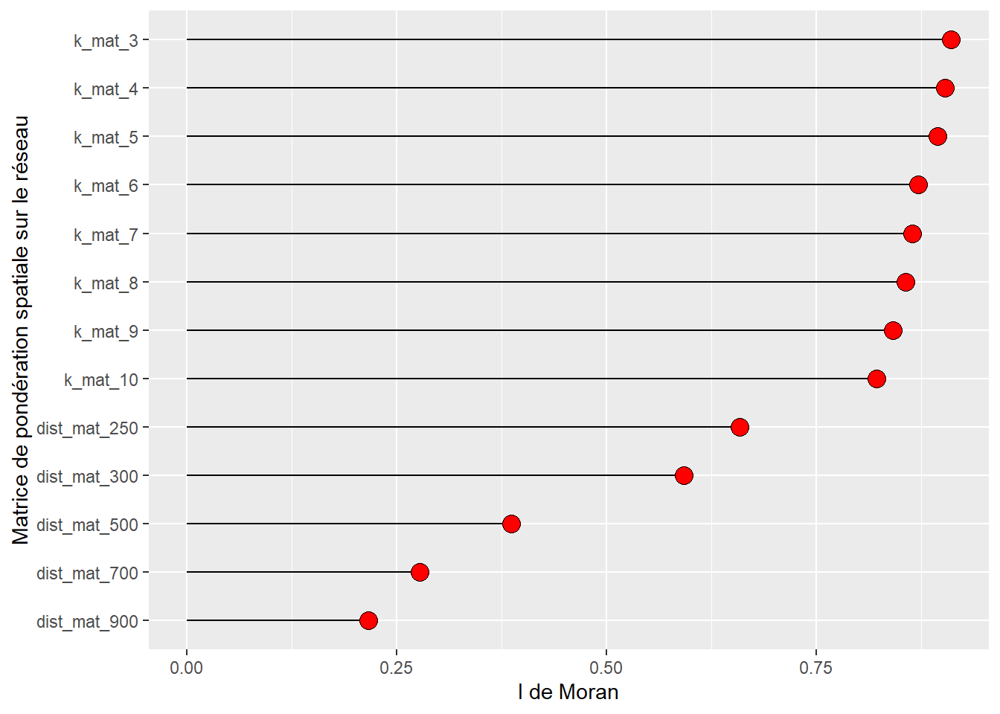
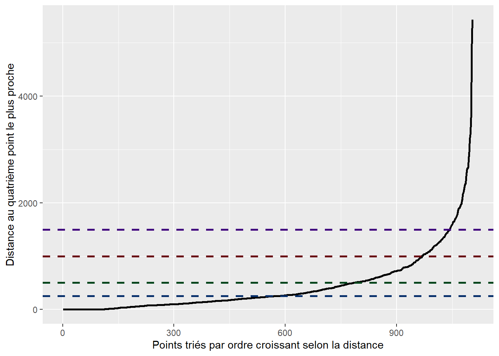

6 Analyses d’évènements localisés sur un réseau
Dans le chapitre 3, nous avons décrit des méthodes de répartition ponctuelle qui s’appliquent à des espaces classiques en deux dimensions, homogènes et sans limites dans toutes les directions. Par contre, lorsque les évènements (points) ne peuvent se produire que le long des lignes d’un réseau, les hypothèses de base des méthodes de répartition ponctuelle ne tiennent plus et produisent alors des résultats biaisés. Par conséquent, dans ce chapitre, nous abordons des méthodes d’analyse de répartition ponctuelle spécifiques à des évènements localisés sur un réseau.
Liste des packages utilisés dans ce chapitre
- Pour importer et manipuler des fichiers géographiques :
-
sfpour importer et manipuler des données vectorielles. -
lubridatepour manipuler des champs de format date.
-
- Pour construire des cartes et des graphiques :
-
tmappour construire des cartes thématiques. -
ggplot2pour construire des graphiques. -
classIntpour définir des intervalles sur une variable continue. -
viridispour des palettes de couleurs.
-
- Pour les analyses de méthodes de répartition ponctuelle sur un réseau :
-
spNetworkdédié aux analyses spatiales sur un réseau. -
futurepour accélérer les calculs despNetwork. -
spdeppour calculer des indices d’autocorrélation spatiale. -
dbscanpour l’algorithme DBSCAN.
-
6.1 Pourquoi recourir à un réseau pour des méthodes d’analyse de répartition ponctuelle?
Les méthodes classiques d’analyse de répartition ponctuelle postulent que l’espace analysé est le plus souvent en deux dimensions, homogène et sans limite dans toutes les directions. Toutefois, des phénomènes se produisent dans des espaces pour lesquels ces hypothèses sont totalement invalidées, menant à l’obtention de résultats biaisés, voire incohérents. C’est notamment le cas d’évènements localisés le long des segments d’un réseau qui sont par exemple :
Des accidents de la route se produisent nécessairement le long des axes routiers.
Des fuites d’eau se produisent le long des canalisations d’une ville.
Des interruptions de service de bus se produisent le long de lignes de transport collectif.
Certaines espèces d’oiseaux nichent systématiquement le long de cours d’eau.
Contrairement à un espace géographique classique en deux dimensions, il est possible de considérer qu’un réseau géographique (c’est-à-dire un réseau dont les nœuds et les lignes ont des coordonnées spatiales) est un espace en 1,5 dimension puisqu’il n’est possible de se déplacer que le long des lignes et de ne changer de direction qu’au niveau d’un nœud (Steenberghen, Aerts et Thomas 2010). Cette distinction pose trois problèmes principaux si nous utilisons les méthodes de répartition ponctuelle classiques.
Premièrement, la distance euclidienne (à vol d’oiseau) tend systématiquement à sous-estimer la distance réelle entre deux points. En effet, la longueur d’un trajet sur un réseau est toujours plus grande ou égale à la distance euclidienne. La figure 6.1 illustre ce premier problème avec un cas simple comprenant trois points sur un réseau.
Deuxièmement, la non-prise en compte des lignes du réseau peut mener à analyser des secteurs dans lesquels les évènements ne peuvent pas se produire. La figure 6.2 illustre un cas où nous tenterions de produire un nouveau jeu de points distribués aléatoirement (points bleus), mais en respectant la densité initiale des points réels (points rouges). Ce type de méthode est notamment utilisé pour déterminer si un ensemble de points est plus ou moins concentré comparativement à ce que le hasard produirait. Comparer des points sur le réseau à des points hors du réseau conduit à surévaluer la concentration des points sur le réseau, car il y a plus d’espace en dehors du réseau que sur le réseau.
Troisièmement, la masse des évènements ne se propage pas dans un espace en 2D comme dans un espace en 1,5D (figure 6.3). Dans un réseau, la masse des évènements doit être divisée aux intersections. Si cette division n’est pas prise en compte, alors la masse des évènements est dupliquée aux intersections. Cette problématique se pose particulièrement aux méthodes d’estimation de densité par noyau que nous décrirons plus tard dans ce chapitre.
De nombreuses méthodes d’analyse de répartition ponctuelle ont été adaptées pour pouvoir être appliquées avec des réseaux géographiques (Okabe et Sugihara 2012). Dans ce chapitre, nous abordons les méthodes de densité par noyau sur un réseau (network kernel density estimation, NKDE) et la création de matrices de pondération spatiale avec des distances sur un réseau pour calculer des mesures d’autocorrélation spatiale.
6.2 Cartographie de la densité d’évènements sur un réseau
À la section 3.4.2, nous avons décrit les méthodes d’analyse de densité dans une maille régulière : carte de chaleur ou estimation de la densité par noyau (kernel density estimation – KDE). Pour un rappel, une KDE peut être utilisée pour tenter de reconstruire un processus spatial produisant des évènements. Le processus spatial en lui-même est impossible à mesurer, mais nous tentons de le reconstruire et de l’approximer en nous basant sur les évènements observés qui sont des réalisations du processus sous-jacent. Sur un réseau, la logique est exactement la même : un processus spatial qui est invisible conduit à la réalisation d’évènements le long des lignes d’un réseau géographique.
6.2.1 Estimation de la densité des points sur un réseau
L’estimation de la densité sur un réseau (Network Kernel Density Estimation – NKDE) utilise une approche similaire à la KDE (section 3.4.2). L’idée générale est de répartir la masse des évènements le long des lignes du réseau autour de chaque évènement et d’additionner ensuite ces densités pour obtenir une estimation locale de l’intensité du processus spatial générant ces évènements. Comparativement à la KDE, les spécificités de la NKDE sont les suivantes :
Les intensités sont calculées non pas sur des pixels, mais sur leurs équivalents appelés lixels. Un lixel correspond à simplement une portion de segment de ligne du réseau d’une longueur déterminée (50 mètres par exemple).
Les distances sont calculées sur le réseau et non à vol d’oiseau.
Comme pour la KDE, il faut déterminer la valeur du rayon d’influence (bandwidth) et choisir une fonction kernel.
6.2.1.1 Trois formes de NKDE
La NKDE peut prendre trois formes différentes traitant différemment la répartition de la masse aux intersections dans un réseau.
NKDE géographique (Geo-NKDE). Il s’agit du cas le plus simple, car aucun traitement particulier n’est réalisé aux intersections du réseau et la densité d’un lixel est simplement basée sur la distance entre le centre de ce lixel et un évènement. Cette méthode est intuitive et peu coûteuse en temps de calcul, mais elle produit des résultats biaisés. En effet, si la masse d’un évènement se propage de façon continue dans toutes les directions à une intersection, alors la masse est multipliée par le nombre de directions possibles. Par exemple, à la figure 6.4, qui comprend une intersection avec trois segments connectés, la masse totale est égale à 150 % et non à 100 %. Ainsi, dans un réseau avec de nombreuses intersections, l’intensité est systématiquement surestimée avec cette méthode.
Un aperçu en 3D de la répartition de la masse est disponible à la figure ci-dessous avec un seul évènement.
La formule pour calculer la Geo-NKDE est :
\[ \hat{\lambda}_h(u)=\frac{1}{h} \sum_{i=1}^N k\left(\frac{\operatorname{dist}_{\text {net }}\left(u, e_i\right)}{h}\right) \text{ avec :} \tag{6.1}\]
- \(\hat{\lambda}_h(u)\), l’estimation de l’intensité au point \(u\) avec la bandwidth \(h\).
- \(N\), le nombre d’évènements.
- \(k\), une fonction kernel.
- \(\operatorname{dist}_{\text{net}}\left(u, e_i\right)\), la distance réseau entre la localisation \(u\) et l’évènement \(e_i\).
NKDE discontinue (ESD-NKDE). Cette seconde méthode impose que la masse des évènements soit divisée aux intersections par le nombre de directions possible. En procédant ainsi, il est possible d’éviter le biais de la Geo-NKDE, mais cela conduit à une estimation discontinue de la NKDE. En effet, l’intensité d’un évènement chute fortement au détour d’une intersection ce qui est contre-intuitif en géographie bien que l’intensité produite soit non biaisée (voir la figure ci-dessous). Comme pour la précédente, le second avantage de cette méthode est qu’elle est peu coûteuse en temps de calcul.
La formule pour calculer la ESD-NKDE est la suivante :
\[ \hat{\lambda}_h\left(u, e_i\right)=k\left(d_{i s t_{n e t}}\left(u, e_i\right)\right) \prod_{j=1}^J\left(\frac{1}{\left(n_{i j}-1\right)}\right) \text{ avec :} \tag{6.2}\]
- \(\prod_{j=1}^J\left(\frac{1}{\left(n_{i j}-1\right)}\right)\) est le terme qui permet de contrôler la réduction de la masse due aux \(J\) intersections rencontrées entre \(u\) et \(e_i\) et ayant un nombre d’embranchements \(n_{ij}\).
NKDE continue (ESC-NKDE). La troisième méthode implique également de diviser la masse des évènements aux intersections, mais aussi de corriger rétroactivement la masse précédant l’intersection pour forcer l’estimation à être continue. Cette estimation est donc non biaisée et ne produit pas de discontinuité (voir la figure ci-dessous). Cependant, la correction rétroactive nécessite un temps de calcul nettement plus long que les deux précédentes méthodes.
Du fait de sa nature récursive, il est difficile de présenter la ESC-NKDE avec une équation. Cependant, l’algorithme complet est décrit par Atsuyuki Okabe et Sugihara Kokichi (2012).
La figure 6.5 permet de comparer la répartition de la masse des évènements aux intersections entre les NKDE, tandis que le tableau 6.1 résume les avantages et inconvénients des trois types de NKDE.
| NKDE | Avantage | Désavantage |
|---|---|---|
| NKDE géographique (Geo-NKDE) | Intuitive et facile à calculer | La somme de la masse totale est inexacte. |
| NKDE discontinue (ESD-NKDE) | Respect de la masse totale et facile à calculer | L’espace discontinu est contre-intuitif |
| NKDE continue (ESC-NKDE) | Respect de la masse totale et intuitive | Couteux en termes de temps de calcul |
Package spNetwork
Pour une lecture plus détaillée sur les trois NKDE, nous vous recommandons de lire l’article décrivant le package spNetwork (Gelb 2021).
6.2.1.2 Correction de Diggle
Très souvent, les données collectées pour un phénomène analysé sont limitées à une zone géographique (territoire d’étude) et les évènements se produisant en dehors de cette zone ne sont pas enregistrés. Ce biais de collecte entraîne une sous-estimation systématique de l’intensité estimée par les méthodes KDE et NKDE aux frontières de la zone d’étude. Pour limiter cette sous-estimation, il est préférable de collecter directement les données dans un périmètre plus large que la zone étudiée. Cependant, lorsque les données ont déjà été collectées, il est possible d’appliquer la correction de Diggle (1985) (équation 6.3).
\[ \begin{gathered} \lambda^D(u)=\frac{1}{bw} \sum_{i=1}^n w_i \cdot \frac{1}{e\left(e_i\right)} K\left(\operatorname{dist}\left(u, e_i\right)\right) \\ e(u)=\int_W^v K(\operatorname{dist}(u, v)) \text{ avec :} \end{gathered} \tag{6.3}\]
- \(e(u)\) étant la masse de l’évènement \(u\) localisé dans la zone d’étude \(W\).
Concrètement, cette correction propose d’augmenter la masse des évènements localisés à proximité de la frontière de la zone d’étude. Ces évènements voient leur pondération multipliée par l’inverse de la proportion de leur masse comprise à l’intérieur de la zone d’étude. Ainsi, un point dont 100 % de la masse se trouve dans la zone d’étude garde le même poids (1/1 = 1); un point avec 75 % de sa masse dans la zone d’étude a son poids multiplié par 4/3 (1/0,75 = 4/3) et un point avec 50 % de sa masse dans la zone d’étude a son poids multiplié par deux (1/0,5 = 2).
6.2.1.3 Bandwidths adaptatives
Jusqu’ici, nous avons présenté les méthodes d’estimation de la densité par kernel avec des bandwidths globales. Il existe une catégorie de kernels appelés adaptatifs qui utilisent, comme leur nom l’indique, des bandwidths s’adaptant localement.
L’idée générale est que chaque évènement peut avoir sa propre bandwidth locale. Cette modification se justifie du point de vue théorique. Pour un rappel, nous considérons que les évènements ont eu lieu à un certain endroit du fait d’un patron spatial d’arrière-plan. Nous formulons donc l’hypothèse qu’un évènement aurait pu se produire dans un certain rayon (bandwidth) autour de son emplacement réel selon une probabilité décroissante avec la distance (fonction kernel). Dans les secteurs où se situent de nombreux points, notre incertitude sur la localisation d’un point est moins grande, nous pouvons donc utiliser des bandwidths plus petites. Cependant, dans les secteurs avec très peu de points, le processus spatial est beaucoup plus diffus et l’évènement aurait pu se produire dans un rayon plus large, incitant à utiliser des bandwidths plus grandes.
Deux approches sont le plus souvent utilisées pour créer des bandwidths locales : la méthode d’Abramson (1982) et la méthode des k plus proches voisins (Orava 2011).
6.2.1.3.1 Bandwidths adaptatives par la méthode d’Abramson
La méthode d’Abramson (1982) propose d’utiliser des bandwidths locales qui sont inversement proportionnelles à la racine carrée de l’intensité locale du processus spatial étudié. Cependant, puisque nous ne disposons pas d’une mesure de ce processus, nous devons en fournir une approximation à priori. Cette approximation est obtenue en sélectionnant une première bandwidth globale (appelée pilote) et l’estimation de la densité est effectuée. Une fois que la densité à priori est calculée à la localisation exacte de chaque évènement, il est ensuite possible de calculer une bandwidth locale pour chaque évènement avec l’équation 6.4 :
\[ h(e_{i}) = h_{0} \times \frac{1}{\sqrt{\tilde{f}h_{0}(e_{i})}} \times \frac{1}{\gamma_{f}}\\ \gamma_{f} = \exp(\frac{\sum_{i}log(\frac{1}{\sqrt{\tilde{f}h_{0}(e_{i})}})}{n}) \text{ avec :} \tag{6.4}\]
- \(h(e_{i})\) est la bandwidth locale pour l’évènement \(e_{i}\).
- \(h_0\) est la bandwidth pilote globale.
- \(\tilde{f}h_{0}(e_{i})\) est l’estimation locale de la densité à priori pour l’évènement \(e_{i}\) avec \(h_0\).
L’objectif est bien évidemment de sélectionner la bandwidth pilote \(h_0\).
6.2.1.3.2 Bandwidths adaptatives par la méthode des k plus proches voisins
Cette méthode est certainement plus facile à expliquer. Elle consiste à calculer, pour chaque évènement, la distance qui le sépare de son plus proche voisin de rang k (k étant un entier plus grand que 0). Dans des secteurs avec peu d’évènements, la distance au plus proche voisin de rang k sera plus grande. L’enjeu pour cette méthode est donc de déterminer k. La figure 6.6 illustre l’impact de ces méthodes sur les bandwidths locales en prenant le jeu de données fourni dans le package spNetwork, portant sur les accidents à vélo dans les quartiers centraux de Montréal.
6.2.1.4 Sélection d’une bandwidth
Comme signalé dans la section 3.4.2.1, le choix de la bandwidth est crucial dans l’application d’une estimation de densité par kernel. Dans le cas de la NKDE, le nombre de méthodes est plus limité que pour la KDE, mais il est toujours possible d’utiliser l’approche par validation croisée des probabilités (likelihood cross validation). Plus exactement, cette méthode choisit une bandwidth de façon à minimiser l’impact qu’aurait le fait de retirer un évènement du jeu de donnée (leave one out cross validation). En effet, puisque chaque point est une réalisation d’un processus spatial, le fait de retirer un point des données ne devrait affecter que marginalement l’estimation locale de l’intensité du processus spatial. Il est possible de minimiser ce score en sélectionnant la bonne bandwidth. Il est possible de calculer ce score pour une bandwidth donnée avec l’équation 6.5 :
\[ \operatorname{LCV}(bw)=\sum_i \log \hat{\lambda}_{-i}\left(x_i\right) \text{ avec :} \tag{6.5}\]
- \(bw\) est la bandwidth à évaluer.
- \(\hat{\lambda}_{-i}\) est l’intensité estimée à la localisation de l’évènement i sans la présence de l’évènement i.
Notez qu’il s’agit d’une simplification de l’équation qui comporte normalement un second terme qui tend à être une constante et peut donc être retiré pour alléger les calculs (Loader 2006). Cette méthode peut aussi être utilisée pour sélectionner la bandwidth pilote ou k lorsque nous utilisons une bandwidth adaptative.
6.2.2 Mise en œuvre dans R
Nous analysons ici les collisions ayant eu lieu sur le réseau routier de la ville de Sherbrooke. Nous commençons par appliquer une NKDE avec bandwidth fixe et nous la comparons avec deux NKDE utilisant des bandwidths adaptatives. Nous utilisons principalement le package spNetwork (Gelb 2021).
La première étape consiste à charger les données des accidents et le réseau routier. La figure 6.7 permet de visualiser la répartition spatiale des accidents.
library(sf)
library(tmap)
library(ggplot2)
library(spNetwork)
library(future) # package utilisé pour accélérer les calculs dans spNetwork
future::plan(future::multisession(workers = 5))
## Importation des couches géographiques
routes <- st_read('data/chap01/shp/Segments_de_rue.shp', quiet = TRUE)
collisions <- st_read('data/chap04/DataAccidentsSherb.shp', quiet = TRUE)
## Application de la même projection
routes <- st_transform(routes, 2949)
routes <- sf::st_cast(routes, 'LINESTRING')
collisions <- st_transform(collisions, 2949)
## Cartographie des données des collisions et du réseau routier
tm_shape(routes) +
tm_lines('grey20') +
tm_shape(collisions) +
tm_dots('red', size = 0.05)+
tm_layout(frame = FALSE) Pour l’analyse, nous utilisons la fonction kernel quadratique et la NKDE continue (ESC-NKDE). Puis, nous choisissons une bandwidth avec l’approche par validation croisée des probabilités. Notez que pour réduire le temps de calcul, la NKDE discontinue (ESD-NKDE) est utilisée dans la phase de sélection de la bandwidth, car il est bien plus rapide à calculer.
eval_bandwidth <- bw_cv_likelihood_calc.mc(
bws = seq(100, 1200, 50),
lines = routes,
events = collisions,
w = rep(1, nrow(collisions)), # le poids de chaque évènement est 1
kernel_name = 'quartic',
method = 'discontinuous',
adaptive = FALSE,
max_depth = 10,
digits = 1,
tol = 0.1,
agg = 5, # les accidents dans un rayon de 5 mètres seront agrégés
grid_shape = c(5,5),
verbose = TRUE)À la figure 6.8, nous constatons qu’au-delà de 900 mètres, le gain obtenu en augmentant la valeur de la bandwidth est marginal. Par conséquent, nous retenons cette valeur de bandwidth pour la première estimation de l’intensité des accidents.
## Graphique pour les bandwidths
ggplot(eval_bandwidth) +
geom_path(aes(x = bw, y = cv_scores)) +
geom_point(aes(x = bw, y = cv_scores), color = 'red')+
labs(x = "Valeur de la bandwidth", y = "Valeur du CV")

## Création des lixels d'une longueur de 100 mètres
lixels <- lixelize_lines(routes, 100, mindist = 50)
## Centroïdes des lixels
lixels_centers <- spNetwork::lines_center(lixels)## Calcul de la NKDE
future::plan(future::multisession(workers=2))
intensity <- nkde.mc(lines = routes,
events = collisions,
w = rep(1, nrow(collisions)),
samples = lixels_centers,
kernel_name = 'quartic',
bw = 900,
adaptive = FALSE,
method = 'continuous',
max_depth = 8,
digits = 1,
tol = 0.1,
agg = 5,
verbose = FALSE,
grid_shape = c(5,5))
if (!inherits(future::plan(), "sequential")) future::plan(future::sequential)Une fois que les valeurs de densité sont obtenues, nous pouvons les cartographier à l’échelle des lixels (figure 6.9).
lixels$density <- intensity * 1000
tm_shape(lixels) +
tm_lines("density", lwd = 1.5, n = 7, style = "fisher",
legend.format = list(text.separator = "à"))+
tm_layout(frame=FALSE)

Nous pouvons à présent utiliser une bandwidth adaptative. Pour cela, nous devons réévaluer les différentes bandwidths globales avec l’approche par validation croisée des probabilités.
future::plan(future::multisession(workers=2))
eval_bandwidth_adapt <- bw_cv_likelihood_calc.mc(
bws = seq(100, 1200, 50),
lines = routes,
events = collisions,
w = rep(1, nrow(collisions)), # le poids de chaque évènement sera 1
kernel_name = 'quartic',
method = 'discontinuous',
adaptive = TRUE,
trim_bws = seq(100, 1200, 50) * 2,
max_depth = 10,
digits = 2,
tol = 0.1,
agg = 5, # tous les accidents dans un rayon de 5m seront agrégés
grid_shape = c(5,5),
verbose = TRUE
)
if (!inherits(future::plan(), "sequential")) future::plan(future::sequential)ggplot() +
geom_path(data = eval_bandwidth,
mapping = aes(x = bw, y = cv_scores)) +
geom_point(data = eval_bandwidth,
mapping = aes(x = bw, y = cv_scores), color = 'red') +
geom_path(data = eval_bandwidth_adapt,
mapping = aes(x = bw, y = cv_scores)) +
geom_point(data = eval_bandwidth_adapt,
mapping = aes(x = bw, y = cv_scores), color = 'blue')+
labs(x = "Valeur de la bandwidth", y = "Valeur du CV")

La figure 6.10 indique que les scores obtenus par les bandwidths adaptatives sont systématiquement supérieurs à ceux obtenus par les bandwidths fixes. Nous gardons une bandwidth pilote de 900 mètres pour recalculer notre ESC-NKDE avec une bandwidth adaptative.
lixels$density_adpt <- intensity_adpt$k * 1000
tm_shape(lixels) +
tm_lines("density_adpt", lwd = 1.5, n = 7, style = "fisher",
legend.format = list(text.separator = "à"))+
tm_layout(frame=FALSE)Comparativement aux résultats obtenus avec les bandwidths fixes, nous constatons que le lissage est beaucoup plus faible et que les points chauds sont plus faciles à identifier. Le package spNetwork permet aussi d’utiliser la méthode des k plus proches voisins comme bandwidth locale.
knn_net <- spNetwork::network_knn(collisions,
lines = routes,
k = 30,
maxdistance = 3000,
grid_shape = c(1,1),
verbose = FALSE)
dist_mat <- knn_net$distances
# Nous limitons les bandwidths avec des bornes de 100 à 3000 m
dist_mat <- ifelse(dist_mat > 3000, 3000, dist_mat)
dist_mat <- ifelse(dist_mat < 100, 100, dist_mat)eval_bandwidth_knearest <- bw_cv_likelihood_calc(
bws = NULL,
mat_bws = dist_mat,
lines = routes,
events = collisions,
w = rep(1, nrow(collisions)), # le poids de chaque évènement sera 1
kernel_name = 'quartic',
method = 'discontinuous',
adaptive = TRUE,
trim_bws = NULL,
max_depth = 10,
digits = 1,
tol = 0.1,
agg = 5, # tous les accidents dans un rayon de 5 mètres seront agrégés
grid_shape = c(5,5),
verbose = TRUE
)eval_bandwidth_knearest$knn <- 1:30
ggplot() +
geom_path(data = eval_bandwidth_knearest,
mapping = aes(x = knn, y = cv_scores)) +
geom_point(data = eval_bandwidth_knearest,
mapping = aes(x = knn, y = cv_scores), color = 'red')+
labs(x = "Nombre de plus proches voisins (k)", y = "Valeur du CV")La figure 6.12 indique que le meilleur score est obtenu pour une bandwidth allant jusqu’au 16e voisin.
lixels$density_adpt_knn <- intensity_adpt_knn * 1000
tm_shape(lixels) +
tm_lines("density_adpt_knn", lwd = 1.5, n = 7, style = "fisher",
legend.format = list(text.separator = "à"))+
tm_layout(frame=FALSE)

6.2.3 Estimation de la densité spatio-temporelle sur un réseau
Comme nous avons pu le voir dans la section 3.4.3, il est courant d’analyser des données d’évènements disposant à la fois d’une localisation dans l’espace et dans le temps. Il est alors possible de calculer une densité spatio-temporelle, soit de lisser les évènements à la fois dans la dimension spatiale et dans la dimension temporelle. Plus exactement, la densité d’un évènement i en un point p et un instant t correspond au produit de la densité spatiale et de la densité temporelle de i.
Cette extension est aussi valide dans le cas de l’analyse d’évènement sur réseau.
\[ \hat{\lambda}_{h_n h_t}\left(u_{n t}\right)=\frac{1}{h_n h_t} \sum_{i=1}^N k_{n e t}\left(\frac{\operatorname{dist}_{n e t}\left(u_{n t}, e_i\right)}{h_n}\right) \sum_{i=1}^N k_{\text {time }}\left(\frac{\operatorname{dist}_{\text {time }}\left(u_{n t}, e_i\right)}{h_t}\right) \text{ avec :} \]
- \(h_t\) et \(h_n\) les bandwidths temporelle et réseau.
- \(u_{nt}\) un évènement localisé au point n du réseau et à l’instant t dans le temps.
La figure 6.14 illustre le calcul de la TNKDE, soit l’estimation de la densité spatio-temporelle sur un réseau (Temporal Network Kernel Density Estimate).
Comme pour le NKDE, il est possible de :
Utiliser des bandwidths variant localement dans l’espace et le temps.
Comparer des bandwidths par des méthodes de validation croisée.
Appliquer des correctifs aux frontières spatio-temporelles de la zone d’étude.
6.2.3.1 Application dans R
Nous reprenons simplement l’exemple de la section sur la NKDE et voir comment l’étendre au contexte spatio-temporel. Pour cela, nous utiliserons principalement le package spNetwork.
library(sf)
library(spNetwork)
library(lubridate)
library(metR)
library(future) # pour accélérer les calculs de spNetwork
future::plan(future::multisession(workers = 5))
routes <- st_read('data/chap01/shp/Segments_de_rue.shp', quiet = TRUE)
collisions <- st_read('data/chap04/DataAccidentsSherb.shp', quiet = TRUE)
## Préparation de la colonne avec les dates
collisions$dt <- as_date(collisions$DATEINCIDE)
collisions$dt_num <- as.numeric(collisions$dt - min(collisions$dt))
## Reprojection dans le même système
routes <- st_transform(routes, 32187)
collisions <- st_transform(collisions, 32187)
routes <- sf::st_cast(routes, 'LINESTRING')
routes$length <- st_length(routes)
## Préparation des routes et des lixels
routes <- sf::st_cast(routes, 'LINESTRING')Nous commençons par compléter le réseau routier. En effet, certaines sections sont isolées et forment des enclaves inaccessibles. Nous avons ignoré cette problématique jusqu’ici, mais nous verrons comment retirer les petites enclaves déconnectées de la partie principale du réseau. Pour cela, nous commençons par créer un objet de type graph à partir des routes avec le package spNetwork.
library(igraph)
library(dbscan)
library(tmap)
routes <- sf::st_cast(routes, 'LINESTRING')
routes$length <- st_length(routes)
graph <- spNetwork::build_graph(routes, digits = 2,line_weight = "length")
parts <- components(graph$graph)
graph$spvertices$part <- as.character(parts$membership)
tm_shape(graph$spvertices) +
tm_dots("part", size = 0.1)À la figure 6.15, nous pouvons identifier la partie principale du réseau et les segments déconnectés (éléments avec des valeurs supérieures à 1). Puis, nous soustrayons ces éléments du réseau pour alléger le graphe et éviter d’associer des collisions avec des parties inaccessibles du réseau routier.
Maintenant que nous avons nettoyé notre réseau, nous calculons les scores pour les bandwidths.
lixels_main <- lixelize_lines(main_network, 100, mindist = 50)
lixels_main_centers <- spNetwork::lines_center(lixels_main)
# Calcul des scores pour les bandwidths
cv_scores_tnkde <- bw_tnkde_cv_likelihood_calc(
bws_net = seq(700, 1500, 100),
bws_time = seq(10, 40, 5),
lines = main_network,
events = collisions,
time_field = "dt_num",
w = rep(1, nrow(collisions)),
kernel_name = "quartic",
method = "continuous",
max_depth = 10,
digits = 2,
tol = 0.1,
agg = 10,
grid_shape = c(5,5),
verbose = TRUE)# Création d'un graphique pour visualiser les résultats
library(ggplot2)
df2 <- reshape2::melt(cv_scores_tnkde)
ggplot(df2) +
geom_tile(aes(x = Var1, y = Var2, fill = value)) +
geom_contour(aes(x = Var1, y = Var2, z = value),
breaks = c(-400,-300, -250, -200, -180, -150),
color = 'white', linetype = 'dashed')+
scale_fill_viridis_c() +
labs(x = "Bandwidth spatiale (mètres)",
y = "Bandwidth temporelle (jours)",
fill = "cv score") +
coord_fixed(ratio=30)La figure 6.16 indique clairement que des bandwidths plus larges produisent de meilleurs résultats. Pour éviter d’avoir des résultats trop lissées, nous choisisons dans un premier temps la paire de bandwidths 30 jours et 1500 m. Puisque le temps de calcul peut être assez long compte tenu de la longueur des bandwidths (supérieure à 1 km), nous continuons donc à utiliser une NKDE discontinue.
# Choix de la résolution temporelle (dix jours ici)
sample_time <- seq(0, max(collisions$dt_num), 10)
# Calcul des densités
tnkde_densities <- tnkde.mc(lines = main_network,
events = collisions,
time_field = "dt_num",
w = rep(1, nrow(collisions)),
samples_loc = lixels_main_centers,
samples_time = sample_time,
kernel_name = "quartic",
bw_net = 1500, bw_time = 30,
adaptive = TRUE,
trim_bw_net = 1800,
trim_bw_time = 60,
method = "continuous",
div = "bw", max_depth = 10,
digits = 2, tol = 0.01,
adaptive_separate = FALSE,
agg = 10, grid_shape = c(5,5),
verbose = TRUE)On peut à présent représenter notre TNKDE avec une carte animée!
library(classInt)
library(viridis)
all_times <- min(collisions$dt) + days(sample_time)
tnkde_densities$k <- tnkde_densities$k*10000
tnkde_densities$k <- ifelse(tnkde_densities$k < 0, 0, tnkde_densities$k)
color_breaks <- classIntervals(c(tnkde_densities$k), n = 10, style = "kmeans")
all_maps <- lapply(1:length(all_times), function(i){
dens <- tnkde_densities$k[,i]
dt <- all_times[[i]]
lixels_main$dens <- dens
lixels2 <- lixels_main[order(-1*lixels_main$dens),]
map <- tm_shape(lixels2) +
tm_lines("dens", breaks = color_breaks$brks,
palette = mako(10,direction = -1), lwd = 2) +
tm_layout(frame = FALSE, legend.show=FALSE,
main.title = as.character(all_times[[i]]))
return(map)
})
# Création d'une animation pour produire la carte animée
tmap_animation(all_maps, filename = "images/Chap06/animated_TNKDE_sherbrooke.gif",
width = 1000, height = 1000, dpi = 150, delay = 50)6.3 Mesure d’autocorrélation spatiale sur un réseau
Dans le chapitre 3, nous avons présenté plusieurs mesures d’autocorrélation spatiale globales et locales. À titre de rappel, ces mesures utilisent une matrice \(W\) indiquant les relations spatiales (voisinage, distance, interaction) entre les observations. Lorsque nous analysons des observations sur un réseau, l’utilisation de matrices spatiales basées sur les distances réseaux plutôt qu’euclidiennes permet de représenter plus fidèlement l’organisation spatiale des observations. Voici quelques exemples de matrices de pondération spatiale construites à partir de distances calculées sur un réseau :
Matrice de connectivité selon la distance (section 2.2.2.2) : deux observations sont considérées comme voisines si la longueur du plus court chemin qui les sépare est inférieure au seuil de distance maximal fixé.
Matrice des k plus proches voisins (section 2.2.2.4) : une observation a uniquement pour voisins les k autres observations les plus proches.
Matrices basées sur la distance (section 2.2.2.3) : chaque observation est voisine de toutes les autres observations et le poids accordé à une paire d’observations dans la matrice est obtenu en appliquant une fonction décroissante (inverse de la distance, inverse de la distance au carrée, inverse de l’exponentielle, etc.) à la longueur du plus court chemin entre les deux observations. Si la fonction renvoie une pondération de 0, alors les deux observations sont trop éloignées pour être considérées comme voisines.
Ces matrices peuvent ensuite être standardisées en ligne tel que décrit dans la section 2.2.3.
Un bon exemple d’utilisation de ce type de matrice est l’évaluation de l’autocorrélation spatiale de l’intensité estimée par la méthode NKDE vu dans la section 6.1. En effet, la NKDE est une méthode essentiellement descriptive. Par conséquent, appliquer une mesure classique d’autocorrélation spatiale locale, comme les statistiques locales de Getis et Ord (section 2.4.1) ou la typologie basée sur le diagramme de Moran dans un contexte univarié (section 2.4.3.1), permet d’identifier les points chauds et froids de densité d’événemements statistiquement significatifs. Cette approche a notamment été proposée par Ikuho Yamada et Jean-Claude Thill (2007) sous le nom de ILINCS (I Local Indicators of Network-Constrained Clusters), mais ces auteurs utilisaient à l’époque une GEO-NKDE. Nous reprenons donc l’exemple précédent avec l’ESC-NKDE estimée pour les collisions routières à Sherbrooke et calculons le I de Moran global et une mesure d’autocorrélation spatiale locale sur les lixels, soit la typologie basée sur le diagramme de Moran.
6.3.1 Mise en œuvre dans R
La première étape consiste à créer une matrice de pondération spatiale entre les lixels sur le réseau routier de Sherbrooke. Nous testons plusieurs matrices pour trouver celle qui permet d’obtenir la plus haute valeur pour le I de Moran global.
Pour commencer, nous calculons simplement les distances réseau entre les lixels à l’aide de spNetwork. Notez que la fonction network_listw et sa version multicœur network_listw.mc renvoient un objet de type listw typique du package spdep. Il est aussi possible de l’utiliser pour simplement obtenir des distances (avec les paramètres dist_func = 'identity' et matrice_type = 'I') pour ensuite leur appliquer des fonctions spécifiques. Nous utilisons ici cette approche pour éviter d’avoir à calculer plusieurs fois les chemins plus courts entre les lixels. Pour réduire le temps de calcul de la matrice, nous fixons la distance maximale à 2500 mètres avec (paramètre maxdistance = 2500 de la fonction spNetwork::network_listw.mc).
routes <- st_read('data/chap01/shp/Segments_de_rue.shp', quiet = TRUE)
routes <- st_transform(routes, 2949)
routes <- sf::st_cast(routes, 'LINESTRING')
future::plan(future::multisession(workers = 5))
net_distances <- spNetwork::network_listw.mc(
origins = lixels_centers,
lines = routes,
maxdistance = 2500,
mindist = 1,
dist_func = 'identity',
matrice_type = 'I',
grid_shape = c(5, 5)
)Premièrement, nous construisons plusieurs matrices de connectivité selon la distance standardisées en ligne, captant les voisins à moins de 250, 300, 500, 700 et 900 mètres (rappelons que les lixels ont une longueur de 100 m et que nous partons du centre des lixels pour le calcul des distances).
# une liste qui permettra de stocker toutes les matrices
all_matrices <- list()
bin_dists <- c(250, 300, 500, 700, 900)
for(d in bin_dists){
new_weights <- lapply(net_distances$weights, function(x){
return( (x <= d) / sum(x <= d))
})
net_distances_temp <- net_distances
net_distances_temp$weights <- new_weights
all_matrices[[paste0("dist_mat_",d)]] <- net_distances_temp
}Deuxièmement, nous considérons un ensemble de matrices binaires standardisées en ligne captant les k plus proches voisins (de 3 à 10); il faut cependant que les distances entre les observations restent inférieures à 2500 mètres.
Troisièmement, nous construisons des matrices avec l’inverse de la distance, l’inverse de la distance au carrée et un kernel quadratique avec des seuils maximaux de la distance fixés à 250, 300, 500, 700 et 900 mètres.
# Inverse de la distance
inv_weights <- lapply(net_distances$weights, function(x){
inv <- (1/x)
return(inv / sum(inv))
})
net_distances_temp <- net_distances
net_distances_temp$weights <- inv_weights
all_matrices[["inv_mat"]] <- net_distances_temp
inv2_weights <- lapply(net_distances$weights, function(x){
inv <- (1/x**2)
return(inv / sum(inv))
})
# Inverse de la distance au carré
net_distances_temp <- net_distances
net_distances_temp$weights <- inv2_weights
all_matrices[["inv2_mat"]] <- net_distances_temp
bin_dists <- c(250, 300, 500, 700, 900)
for(d in bin_dists){
new_weights <- lapply(net_distances$weights, function(x){
if(is.null(x) == FALSE){
w <- spNetwork::quartic_kernel(x,d)
return( (w) / sum(w))
}
else{
return(NULL)
}
})
net_distances_temp <- net_distances
net_distances_temp$weights <- new_weights
all_matrices[[paste0("dist_quartic_",d)]] <- net_distances_temp
}Maintenant que nous disposons de toutes ces matrices, nous pouvons calculer le I de Moran global pour chaque matrice.
library(spdep)
## Calcul du I de Moran pour les différentes matrices
moran_vals <- sapply(all_matrices, function(W){
# Petite conversion vers le type de spdep
attr(W,'class') <- c("listw", "nb")
W$style <- "W"
W$neighbours <- W$nb_list
W$nb_list <- NULL
val <- moran(lixels$density_adpt_knn, listw = W,
n = nrow(lixels),
S0 = nrow(lixels),
zero.policy = TRUE)
return(val$I)
})
## Enregistrement dans un dataframe
df_moran <- data.frame(
Matrices = names(all_matrices),
MoranIs = moran_vals
)
## Réalisation d'un graphique
ggplot(data=df_moran, aes(x=reorder(Matrices,MoranIs), y=MoranIs)) +
geom_segment( aes(x=reorder(Matrices,MoranIs),
xend=reorder(Matrices,MoranIs),
y=0, yend=MoranIs)) +
geom_point( size=4,fill="red",shape=21)+
xlab("Matrice de pondération spatiale sur le réseau") +
ylab("I de Moran")+
coord_flip()

À la figure 6.18, nous constatons que la matrice utilisant les trois plus proches voisins obtient la valeur du I de Moran la plus élevé. Nous la conservons pour calculer la mesure d’autocorrélation spatiale locale basée sur la typologie basée sur le diagramme de Moran (figure 6.19).
W <- all_matrices$k_mat_3
attr(W,'class') <- c("listw", "nb")
W$style <- "W"
W$neighbours <- W$nb_list
W$nb_list <- NULL
local_I <- localmoran(lixels$density_adpt, listw = W, zero.policy = TRUE)
lixels$loc_classes <- attributes(local_I)$quadr$mean
lixels$loc_p <- local_I[,5]
lixels$loc_classes2 <- case_when(
lixels$loc_p < 0.01 ~ lixels$loc_classes,
TRUE ~ 'non sign.'
)
Couleurs <- c("High-High" = "#FF0000",
"Low-Low" ="#0000FF",
"High-Low" = "#f4ada8",
"Low-High" ="#a7adf9",
'non sign.' = "#eeeeee")
tm_shape(lixels) +
tm_lines('loc_classes2', palette = Couleurs,
lwd = 1.2, title.col = "Typologie")Mesures d’autocorrélation spatiale globale et locale sur un réseau
Au chapitre 2, nous avons vu une panoplie de mesures d’autocorrélation spatiale globale (section 2.3) et locale (section 2.4) calculées avec différentes matrices de pondération spatiale (section 2.2).
Or, n’importe quelle mesure d’autocorrélation spatiale peut être calculée à partir d’une matrice de pondération spatiale construite à partir des distances réseau. Retenez que le choix de la matrice reste un enjeu important puisqu’elle affecte significativement les résultats comme illustré à la figure 6.18.
6.4 DBSCAN sur un réseau
Dans la section 4.1.1, Nous avons vu l’algorithme DBSCAN détectant des agrégats de points dans l’espace. Cet algorithme de classification non supervisée basée sur la densité des points identifie des agrégats de points à partir de deux paramètres : un rayon de recherche (\(\epsilon\), epsilon) et un nombre minimum de points (\(MinPts\)). Il est assez facile d’adapter cette méthode afin que le rayon de recherche ne soit pas basée sur la distance euclidienne, mais plutôt sur la distance réseau. Cela est particulièrement pertinent lors les évènements sont localisés sur un réseau, comme des accidents routiers.
6.4.1 Mise en œuvre dans R
Pour illustrer la version réseau du DBSCAN, nous reprenons l’exemple de la section 4.1.3 basé sur un jeu de données sur les incidents de sécurité publique survenus sur le territoire de la ville de Sherbrooke de juillet 2019 à juin 2022.
Tout d’abord, nous importons les couches géographiques des accidents et du réseau routier (figure 6.20).
library(sf)
library(tmap)
library(spNetwork)
library(dbscan)
library(ggplot2)
library(spdep)
## Importation des accidents
Accidents.sf <- st_read(dsn = "data/chap04/DataAccidentsSherb.shp", quiet=TRUE)
## Importation des routes (réseau)
routes <- st_read('data/chap01/shp/Segments_de_rue.shp', quiet=TRUE)
# reprojection dans le même système
routes <- st_transform(routes, 32187)
Accidents.sf <- st_transform(Accidents.sf, 32187)
routes <- sf::st_cast(routes, 'LINESTRING')
tm_shape(routes) +
tm_lines('black') +
tm_shape(Accidents.sf) +
tm_dots('red', size = 0.2)Puis, nous recherchons la valeur optimale d’epsilon (\(\epsilon\)) avec un nombre minimal de quatre points (\(MinPts\)) pour former un agrégat. À la lecture de la figure 6.21, nous constatons que le coude se situe certainement entre 750 et 1250 mètres.
Matrice de pondération spatiales des distances réseau avec spNetwork et spdep
Dans le code ci-dessous, les distances réseau sont obtenues avec le package spNetwork, sous forme d’un objet de type listw. Elles sont ensuite converties en matrice avec la fonction listw2mat du package spdep, et enfin en objet de type distance avec la fonction as.dist. Si le nombre de points à analyser est très grand, la matrice de distances pourrait excéder la mémoire vive disponible dans votre ordinateur.
## Calcul des distances pour les quatre plus proches voisins
knn_dists <- network_knn(origins = Accidents.sf,
lines = routes,
k = 4,
maxdistance = 5000,
grid_shape = c(1,1),
verbose = FALSE)
## Graphique pour la distance au quatrième voisin le plus proche
dists4 <- knn_dists$distances[,4]
dists4 <- dists4[order(dists4)]
DistKplusproche <- data.frame(
distance = dists4,
id = 1:length(dists4)
)
ggplot(data = DistKplusproche)+
geom_path(aes(x = id, y = distance), size=1)+
labs(x = "Points triés par ordre croissant selon la distance",
y = "Distance au quatrième point le plus proche")+
geom_hline(yintercept=250, color = "#08306b", linetype="dashed", size=1)+
geom_hline(yintercept=500, color = "#00441b", linetype="dashed", size=1)+
geom_hline(yintercept=1000, color = "#67000d", linetype="dashed", size=1)+
geom_hline(yintercept=1500, color = "#3f007d", linetype="dashed", size=1)

La comparaison des figures 6.22, 6.23, 6.24 et 6.25 montre clairement qu’au-delà de 1000 mètres, les résultats sont assez peu intéressants, car presque tous les points sont agrégés dans le même groupe.
## Calcul des distances réseau entre chaque évènement
network_dists <- network_listw(origins = Accidents.sf,
lines = routes,
maxdistance = 5000,
mindist = 1,
dist_func = "identity",
matrice_type = "I",
grid_shape = c(1,1))
network_dists$neighbours <- network_dists$nb_list
network_dists_matrix <- listw2mat(network_dists)
# 0 signifie que la distance entre les deux points
# est plus grande que le paramètre maxdistance
network_dists_matrix <- ifelse(network_dists_matrix == 0,
5000, network_dists_matrix)
network_dists_matrix <- as.dist(network_dists_matrix)
# Algorithme dbscan avec les différentes valeurs d'epsilon
result250 <- dbscan(network_dists_matrix, eps = 250, minPts = 4)
result500 <- dbscan(network_dists_matrix, eps = 500, minPts = 4)
result1000 <- dbscan(network_dists_matrix, eps = 1000, minPts = 4)
result1500 <- dbscan(network_dists_matrix, eps = 1500, minPts = 4)
Accidents.sf$gp_250 <- as.character(result250$cluster)
Accidents.sf$gp_500 <- as.character(result500$cluster)
Accidents.sf$gp_1000 <- as.character(result1000$cluster)
Accidents.sf$gp_1500 <- as.character(result1500$cluster)
# Cartographie
tmap_options(max.categories = 50)
tm_shape(Accidents.sf)+tm_dots(col="gp_250", title = "DBSCAN 250", size = .5)6.5 Quiz de révision du chapitre
Quels problèmes posent l’utilisation des méthodes classiques d’analyse spatiale pour des données se produisant sur un réseau?
Relisez au besoin la section 6.1.
Pour adapter la méthode classique du Kernel Density Estimate, il est nécessaire de :
Relisez au besoin le début de la section 6.2.
Pour une NKDE, il est uniquement possible de calculer des densités selon une bandwidth fixe.
Relisez au besoin la section 6.2.1.3.
Contrairement à la KDE classique, la NKDE est moins sensible au choix de la bandwidth.
Relisez au besoin la section 6.2.1.4.
Pour une TNKDE, il est uniquement possible de calculer des densités selon une bandwidth fixe.
Relisez au besoin la section 6.2.1.
L’utilisation d’une distance réseau plutôt qu’euclidienne pour un algorithme DBSCAN risque de :
Relisez au besoin la section 6.4.
6.6 Exercices de révision
Exercice 1. Réalisation d’un graphique pour trouver la valeur de la bandwidth optimale
Utilisez la fonction kernel quadratique et la NKDE continue (ESC-NKDE), contruisez un graphique pour choisir une bandwidth avec l’approche par validation croisée des probabilités. Complétez le code ci-dessous.
library(sf)
library(spNetwork)
library(future)
future::plan(future::multisession(workers = 5))
# Importation des données sur les collisions cycles et le réseau de rues
Collisions <- st_read(dsn = "data/chap06/Mtl/DonneesMTL.gpkg", layer="CollisionsAvecCyclistes", quiet=TRUE)
ReseauRues <- st_read(dsn = "data/chap06/Mtl/DonneesMTL.gpkg", layer="Rues", quiet=TRUE)
ReseauRues$LineID <- 1:nrow(ReseauRues)
LongueurKm <- sum(as.numeric(st_length(ReseauRues)))/1000
Collisions <- st_transform(Collisions, st_crs(ReseauRues))
cat("Informations sur les couches",
"\n Collisions avec cylistes :", nrow(Collisions),
"\n Réseau :", round(LongueurKm,3), "km")
# Cartographie
tmap_mode("view")
tm_shape(ReseauRues) + tm_lines("black") +
tm_shape(Collisions) + tm_dots("blue", size = 0.025)+
tm_scale_bar(c(0,1,2), position = 'left')+
tm_layout(frame = FALSE)
## Évaluation des bandwidths de 100 à 1200 avec un saut de 50
eval_bandwidth <- bw_cv_likelihood_calc.mc(à compléter)
## Graphique pour les bandwidths
à compléterCorrection à la section 12.6.1.
Exercice 2. Réalisation d’une NKDE continue.
Complétez le code ci-dessous pour réaliser une NKDE continue avec un fonction kernel quadratique et une valeur de bandwidth de 500 mètres.
library(sf)
library(spNetwork)
library(future)
## Création des lixels d'une longueur de 100 mètres
lixels <- lixelize_lines(ReseauRues, 100, mindist = 50)
lixels_centers <- spNetwork::lines_center(lixels)
## Calcul de la NKDE continue
intensity <- nkde.mc(À compléter)
lixels$density <- intensity * 1000
## Cartographie
À compléterCorrection à la section 12.6.2.